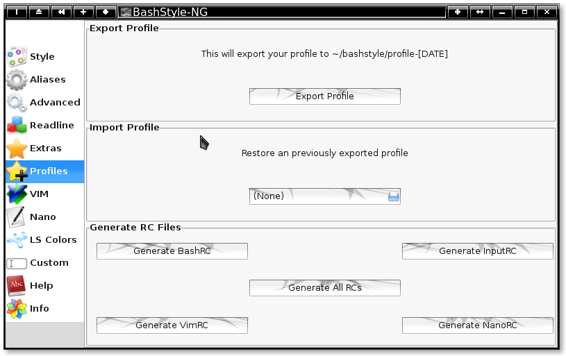

Chapter 6: Profiles
Chapter 5 <<
Index
>> Chapter 7

Profiles
Here you can export or import your configuration and generate standalone rc-files based on it.
The exported profiles or rc-files will reside at $HOME/bashstyle/.